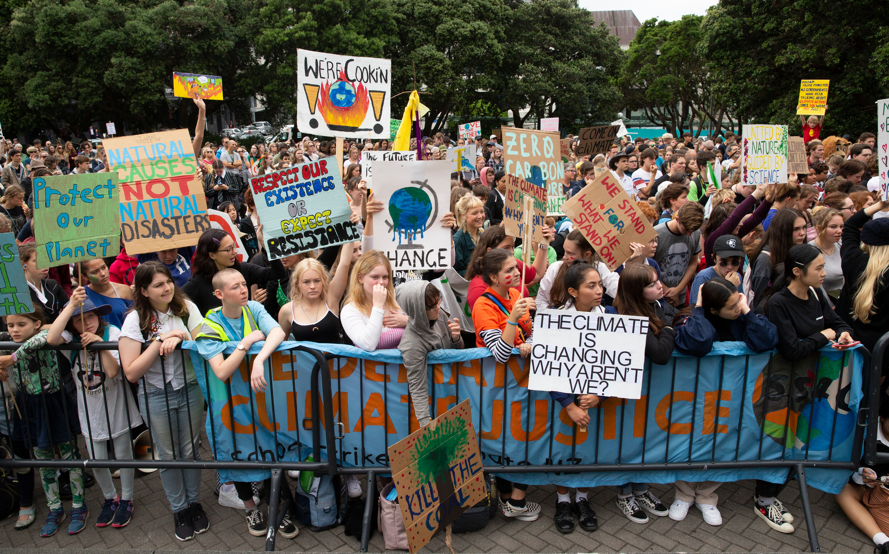
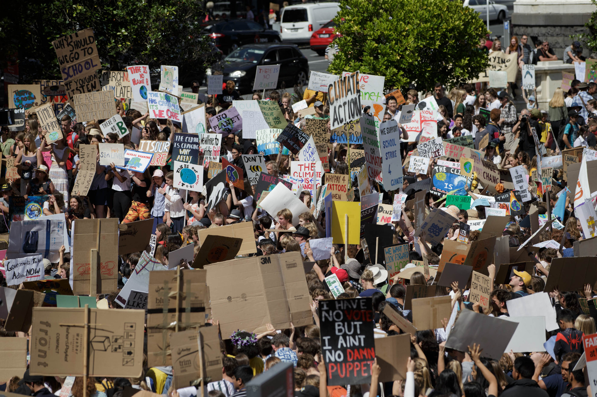

Quentin Atkinson: We must face climate emergency head-on
We must face climate emergency head-on
Newsroom, 4th July 2019Declaring a climate emergency isn’t about pushing a particular political agenda, it is about getting our leaders to call a spade a spade, writes the University of Auckland's Quentin Atkinson
More than 50 of the country's top emerging researchers are calling on New Zealand politicians to declare a climate emergency and want others to join their call.
...
Read the full article at Newsroom.
More than 50 of New Zealand's top scientists have signed Claxon: to call for the declaration of a climate emergency
PM Jacinda Ardern: Government 'not opposed to' idea of declaring a climate emergency
Stuff, 3rd July 2019Prime Minister Jacinda Ardern says the Government is not opposed to declaring a national climate emergency.
The comments come after more than 50 of New Zealand's top scientists called for a declaration of an emergency.
...
Read the full article at Stuff.
NZ Motion to declare a climate emergency opposed in House of Representatives
"That this House declare a climate emergency, recognising the findings of the Intergovernmental Panel on Climate Change
that global temperatures are projected to continue increasing beyond 2 degrees by 2050, unless action is taken to reduce
greenhouse gas emissions; and that this House further recognises the potential disruption to the natural environment, our
society and economy from extreme weather events, droughts, and sea level rises; and that consequently this House affirms
the need to work with communities, councils, young people, iwi and hapu, farmers, and business to develop plans to transition
to a low-emissions economy and adapt to the effects of climate change."
Green Party MP Chlöe Swarbrick attempted to pass a motion in Parliament in May to declare a climate emergency. However the motion was opposed by members of the Opposition.
Climate emergency just 'politics' - Simon Bridges
NewsHub, 21st June 2019National leader Simon Bridges has struck out at local councillors playing "politics" after Auckland Council voted unanimously to declare a climate emergency.
By declaring an emergency, Auckland council has committed to visibly incorporating climate change considerations into their decisions, as well as advocating for central Government action.
...
Read the full article at NewsHub.
Paul Mountfort: March 15 changed NZ in another way... our children found their voice on climate action
NZ Herald, 10th May 2019As our nation continues to mourn March 15's loss of life, and Christchurch's bereaved return to their private, permanent griefs, perhaps there is a chance to offer further tribute to their passing.
March 15 was significant for another event which the tragic massacre eclipsed both locally and globally, but which will not go away. This was the first of what will doubtless be many strikes by school students demanding immediate climate action globally.

Following Greta Thunberg's solitary lead, thousands of our children made their voices heard on our main streets and town squares. In lieu of action by our
political and business leaders they would be the "adults in the room" and march to reclaim their future.Students crammed onto Parliament's front lawn during their climate change protest on March 15. Photo / Mark Mitchell
As well they must. A recent scientific meta-study concluded that the chances of the science of anthropocentric global warming (AGW) being incorrect has reached 5-Sigma level - or 3 x 107.
For laymen betting against climate change, the odds are 3.5 million to one. Denialists are effectively like someone whose retirement plan consists of buying a lotto ticket. Are you feeling lucky?
But it's worse than this because of the moral failing involved. These are our children's and our grandchildren's, our tamariki and our mokopuna's futures we are gambling on.
If an expert panel of engineers told you that the chances of the plane you were about to pack your kids on to of reaching its destination were millions to one, would you listen to the sole contrarian in the room who assures you that jet engines are too complex to troubleshoot?
We must stop humouring these denialist cranks. We need instead to heed the stark warnings issued to us and our governments by the world's foremost climate experts.
For ecological and civilisational crash is what we face under business as usual: "best" estimates of 3-5°C temperature rises this century, likely to unleash such chaos as to and the conditions necessary for organised human existence.
Even the 2°C target of the Paris Accord threatens horrors we've become absurdly inured to. A death spiral for coral and thus the ocean food chain. Collapse of the glaciation systems in the Himalayas that feed the vast populations of India, China and neighbouring countries. The inexorable inundation of coastal cities. Cascading species crashes. Droughts, deserts, superstorms. In short, hell on earth.
It may see that New Zealand can do little to avert these absolute catastrophes. Strictly speaking this is true. Our contribution to global carbon emissions is miniscule. But the capacity for inspiring symbolism is huge.
Witness the aftermath of the dreadful tragedy in Christchurch. Without wishing to paper over the fault lines that exist in our nation, the world saw us rise to the occasion with compassion, liberality and tolerance. And steely resolve: semi-automatic weapons are now banned where other counties have prevaricated for decades.
Jacinda Adern has called climate change our "nuclear-free moment", albeit one that is even more challenging. We call on the PM to continue the leadership for which she has been praised globally in progressing the passage of New Zealand's Zero Carbon Act.

National's reticence and New Zealand First voters' susceptibility to climate skepticism are weighing on the prospects for a robust, bipartisan accord. But a version that is watered
down for political exigency is unacceptable. Students strike for climate change protest at Aotea Square on March 15. Photo / Chris Loufte
Agricultural emissions comprise almost half of our national total. Rather that fudging this with concessions for methane, farmers need support to make the transition to low carbon agriculture, regardless of the inevitable flatulence of opponents who will doubtless paint this as a return to subsidies.
The climate crisis is a national and global emergency and we urge the PM to reflect this in following the lead of the British Parliament in declaring a national and environmental emergency.
We need to urgently invest in smart energy grids and clean intercity rail. Smart cities, smart housing with smart transport networks. Sustainable rather than mass tourism. To plan for what is coming.
SuperGold Card holders and rural voters may be resistant but they too have children and grandchildren.
At this crucial juncture in history New Zealand can indeed be first. We recently experience what it is to once again lead the world in out nation's response to adversity. Now is not the time to lose our nerve but to stand up and be counted on this, most crucial of all issues.
New Zealand needs a Zero Carbon Act worthy of the name. We need to lead the world by example. To do ourselves whatever is necessary globally to cap warming at 1.5°C rise, at absolute most. To make our children and grandchildren proud.
Along with some pain this will bring many benefits and better, more sustainable ways of living. No less, the knowledge that we are stepping up and doing our bit.
Our children are watching. Their future deserves nothing less.
Paul Mountfort. Photo / Supplied
Dr Paul Mountfort is a founding member of the science, industry and communications climate-action group Claxon NZ, and chair of the AUT Centre for Creative Writing. Claxon co-founders and co-signatories to this piece are Biomatters past director Gray Treadwell and Professors Alexei Drummond and Quentin Atkinson of the University of Auckland.
Dr Paul Mountfort is a founding member of the science, industry and communications climate-action group Claxon NZ, and chair of the AUT Centre for Creative Writing. Claxon co-founders and co-signatories to this piece are Biomatters past director Gray Treadwell and Professors Alexei Drummond and Quentin Atkinson of the University of Auckland.